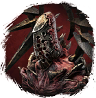
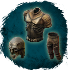
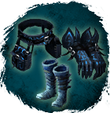

Открыть в интерактивной вики →
| Уровень | 45 |
|---|---|
| Сила (PvE) | 3096 |
| Аспект арены | Gherudu |
| Здоровье | 6666 |
| Мана | 6666 |
| Выносливость | 6666 |
Дроп
 II-III
II-III 
Реффа
Оковы Сна| Рары | Синергетики | Эпики | |||
| Оковы Сна Останки Реффа | 20-40 ур. |  | |||
| Прочее: - | |||||
Статистика

Уровень: 45
Здоровье: 6 666
Мана: 6 666
Выносливость: 6 666
Умения
| Огненный Шар Шаровая молния Бросок камнем Теневой Удар | Теневая аура Удар в живот Отупление Булавка в глаз |
Иммунитеты / особые умения
Обмануть Судьбу
Устойчивость к обездвиживаниюКоманда
-
Локация
Вымершее поселение — ивент Наблюдатель